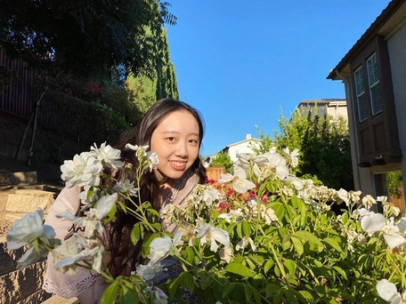

Irene Kao
Data Science, Junior
Hello! I'm currently a full time struggling student, and in my free time I like to do digital art, play games, go on food escapades, or binge shows.
As an introvert I hardly leave my house, but when I do I enjoy hiking and sightseeing wtih my family.
I'm super new to the world of web design, and I'm looking forward to learning lots this semester!
La Note
Plentea
Crepevine Restaurant

Pinterest
I learned how important it is to design a webpage according to your audience's needs and what they primarily use it for. I also learned about
how placing things strategically on the webpage could help guide your audience to look at elements that you want them to see.
One of my favorite aspects of this article is how it provides gifs and images to demonstrate their points clearly. I also really like how they
listed their observations in bullet points, making it easy for me to engage in what they're talking about.
"Who are the people using this product? How might their use cases be different from yours? How does the design serve these use cases?"
I give this article a 10, I found it to be a very informative read.